Vi ska bada! storyboard
Avsnitt 004. Bilderna är byggda av de färdiga utklippen och bakgrunderna i assets/, med ansiktena ritade som i kit.js. Halvgenomskinliga kopior visar var en figur var innan, och pilarna visar rörelsen. Alla tider är preliminära: sången låser dem.
Intro

(titeln syns, ingen röst)
Samma intro som avsnitt 3: kortet i himlen, fjärilen och solen. Bara numret och titeln är nya: Avsnitt 4 · Vi ska bada!
fastKritan ritar

Kritan ritar långsamt bara den gula cirkeln, inga strålar.
papper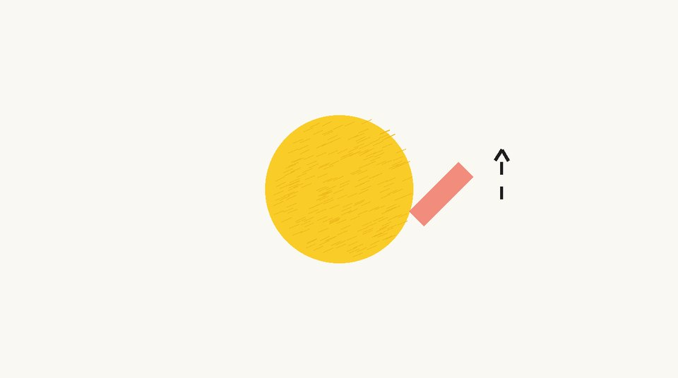
Frågan kommer innan teckningen är klar: kritan stannar och lyfter lite från papperet.
papper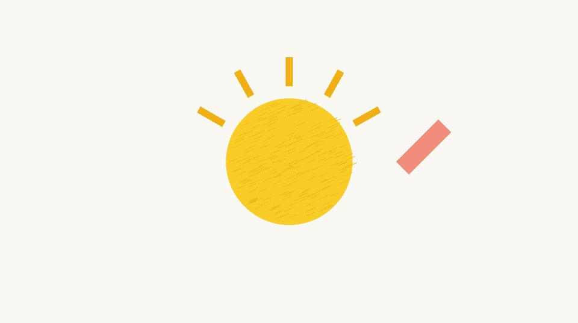
(skrrt … skrrt … skrrt, musiken håller en ton)
Gissningspausen: kritan ritar en stråle i taget som ledtrådar (skrrt). ⚠️ I sången (sang.m4a) är pausen bara ca 2 s (sångtid 7,8–9,8), den ska vara 4–5 s: förläng i redigeringen eller gör om sången med nya prompten i suno.md.
papper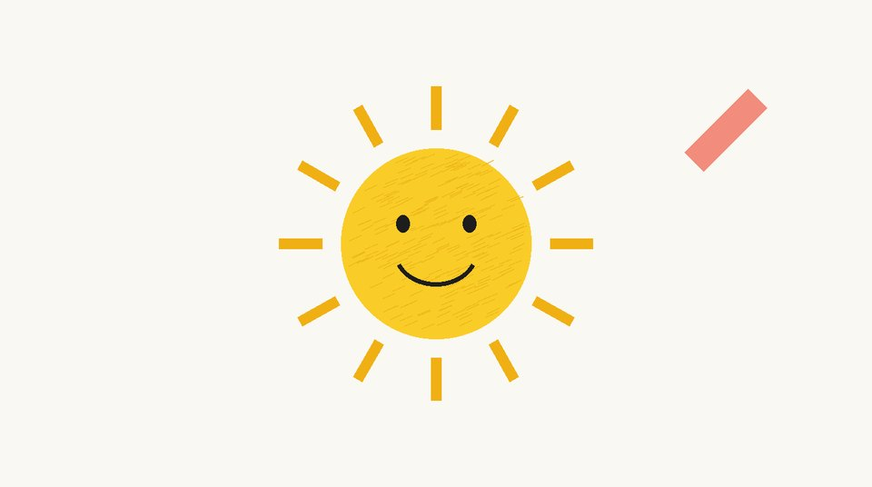
Ca 0,5 s tyst, sedan ”En sol!”: sista strålarna kommer och solen ler. Kritan lyfter.
papperA · Vägen

(swoosh)
Zoom in: solen blir solen på himlen. Bussen står redan på vägen när zoomen landar.
zoom in
BUSSEN: Tuta-tut! Vi ska bada!
Körscen 1, vers 1. Bussen gungar i takt, hjulen snurrar och vägen glider från första sekunden. En fjäril fladdrar förbi (den sjungs inte, så den kan komma när som helst). Lång bild (29 s): instrumentalt efter introt, där bussen säger sin replik, sedan vers 1 från 0:41.
1 körscenRefräng
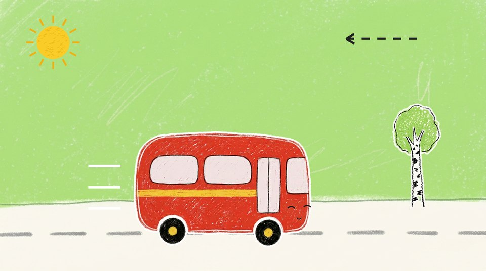
Fast klippmönster, likadant varje gång. Rad 1 ”Tuta-tut, tuta-tut”: närbild på bussen från sidan, studsar och tutar på varje ”tut”.
5 närbild bussenRad 2 ”lilla bussen kör så bra!”: helbild, den enda bilden som skiftar. Den branta backen från 003: bussen kör upp och rullar över krönet.
1 körscen (refrängbild)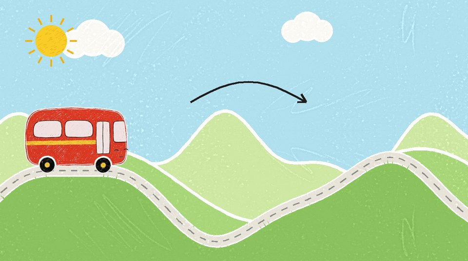
Rad 3: samma närbild som rad 1. Upprepningen är poängen.
5 närbild bussen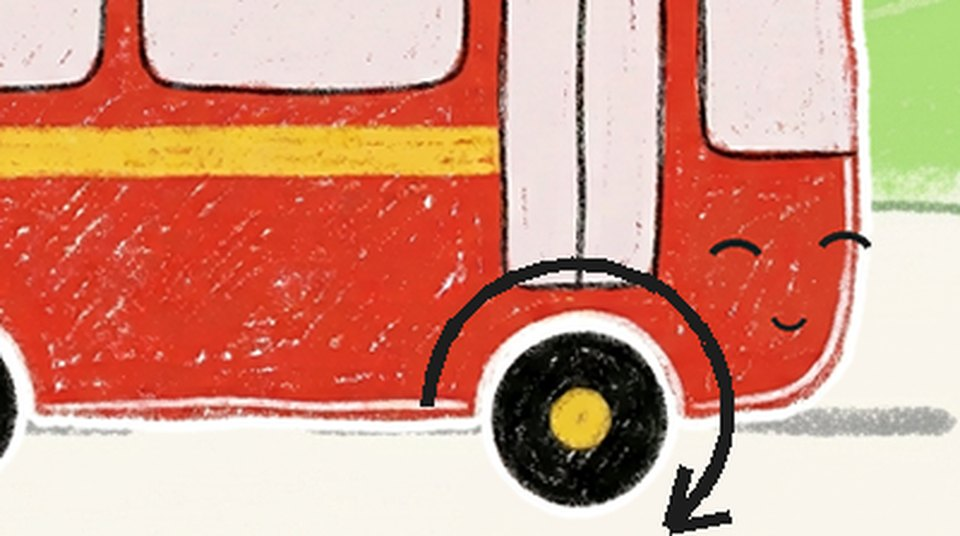
Rad 4 ”hjulen snurrar runt, runt, runt!”: närbild på framhjulet, ett varv per ”runt”. Samma varje gång.
5 närbild bussenA · Vägen

Ett äppelträd glider in från höger och förbi (klippt ur Äppelträdets bakgrund).
1 körscen
(tuff-tuff)
Åkern glider in, traktorn plöjer och tutar, bussen tutar tillbaka.
1 körscen
BUSSEN: Tuta-tut!
Stoppet, likadant båda gångerna. Skylten och grodan glider in på det sjungna ”Vem är det som väntar där?”, vägen stannar på ”stopp”. Grodan väntar med en randig handduk över axeln (kod).
1 körscen
GRODAN: Kväk-kväk! Jag vill bada!
Närbild på grodan, glad. 2 s.
2 närbild
Vers 2, likadan som 15. Dörren öppnas (pschhh) på ”Hej, hej, grodan, kliv på du!”. Grodan hoppar in på ”hopp, hopp, hopp” och vinkar från bakre fönstret på ”hej, hej, hej”.
1 körscen · fönsterposeRefräng
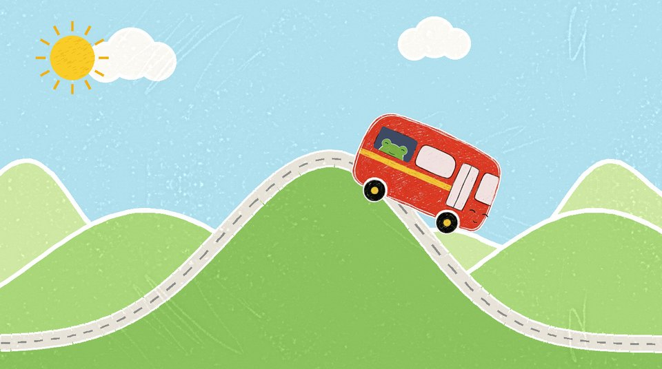
Fast klippmönster, likadant varje gång. Rad 1 ”Tuta-tut, tuta-tut”: närbild på bussen från sidan, studsar och tutar på varje ”tut”.
5 närbild bussen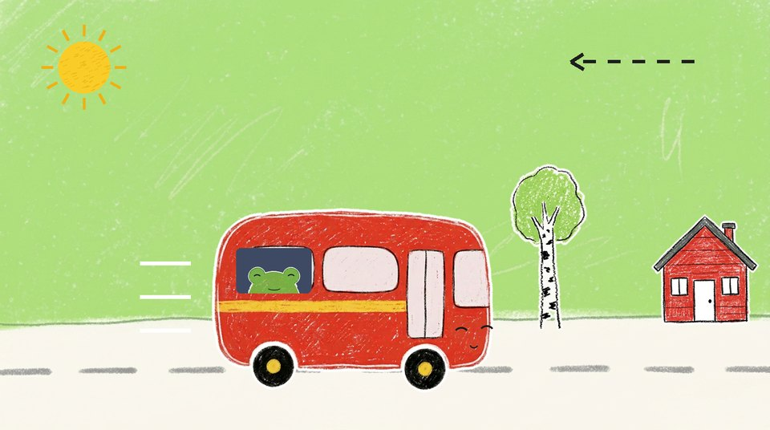
Rad 2 ”lilla bussen kör så bra!”: helbild, den enda bilden som skiftar. Vägen: björken och ankans röda stuga glider förbi, grodan i fönstret.
1 körscen (refrängbild)
Rad 3: samma närbild som rad 1. Upprepningen är poängen.
5 närbild bussen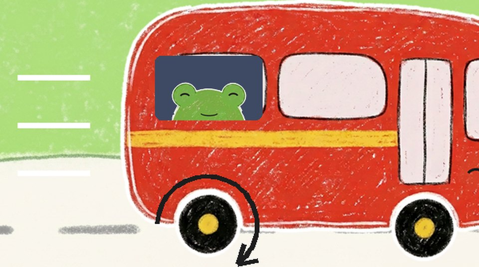
Rad 4 ”hjulen snurrar runt, runt, runt!”: närbild på framhjulet, ett varv per ”runt”. Samma varje gång.
5 närbild bussenA · Vägen

Körscen 2: en damm med en näckros glider förbi (klippt ur Dammens bakgrund). Grodan tittar.
1 körscen
Blommor från ängen glider förbi (klippta ur Ängens bakgrund).
1 körscen
BUSSEN: Tuta-tut!
Stoppet, likadant som 07. Skylten, pölen och ankans röda stuga glider in på ”Vem är det som väntar där?”, vägen stannar på ”stopp”. Ankan plaskar i pölen, grodan i fönstret.
1 körscen
ANKAN: Kvack-kvack! Jag vill bada!
Närbild på ankan, glad. 2 s.
3 närbild
Vers 3, likadan som 10. Dörren öppnas (pschhh) på ”Hej, hej, ankan, kliv på du!”. Ankan hoppar in på ”hopp, hopp, hopp” och vinkar från dörrfönstret på ”hej, hej, hej”. Grodan ser på från sitt fönster.
1 körscen
I pausen vinkar de en i taget, så att barnet kan räkna: först grodan från sitt fönster, sedan ankan från sitt. Svaret kommer efter pausen: grodan studsar på ”en”, ankan på ”två”. ⚠️ I sången (sang.m4a) är räknepausen bara ca 1 s (sångtid 1:59,6–2:00,8), den ska vara 4–5 s: förläng i redigeringen eller gör om sången.
1 körscen · fönsterposeRefräng

Fast klippmönster, likadant varje gång. Rad 1 ”Tuta-tut, tuta-tut”: närbild på bussen från sidan, studsar och tutar på varje ”tut”.
5 närbild bussen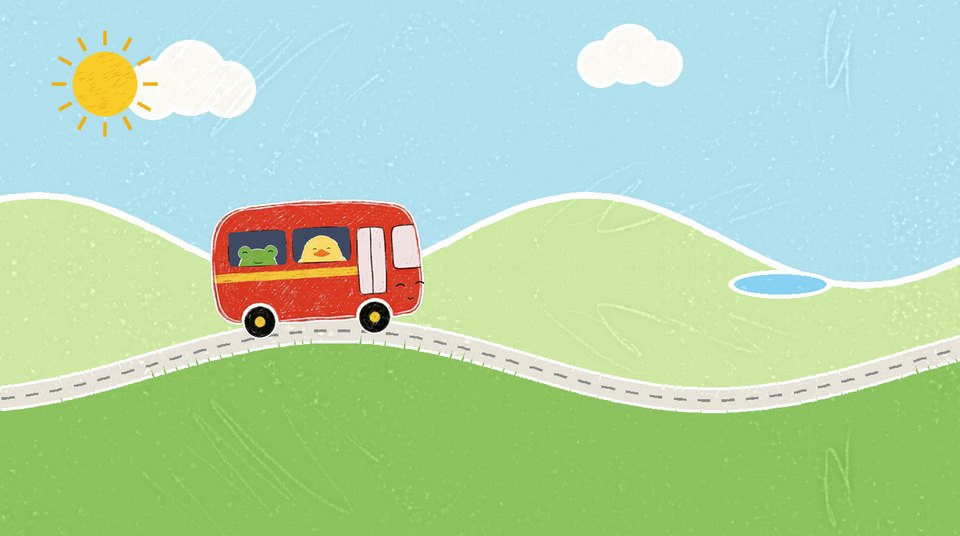
Rad 2 ”lilla bussen kör så bra!”: helbild, den enda bilden som skiftar. De mjuka kullarna (kit.backar), badplatsen skymtar långt borta, grodan och ankan i fönstren.
1 körscen (refrängbild)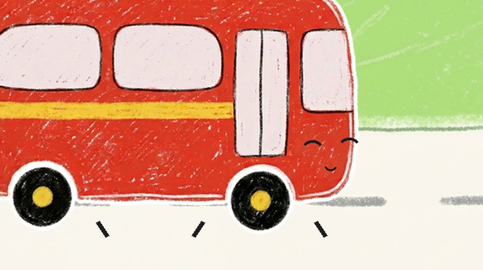
Rad 3: samma närbild som rad 1. Upprepningen är poängen.
5 närbild bussen
Rad 4 ”hjulen snurrar runt, runt, runt!”: närbild på framhjulet, ett varv per ”runt”. Samma varje gång.
5 närbild bussenA · Vägen

Körscen 3 på platt väg: flygplanet glider högt uppe, inget annat rör sig. Grodan och ankan i fönstren.
1 körscen
Badplatsen glider in från höger. Grodan och ankan tittar ut med stora ögon medan sången sjunger ”Titta, där är badplatsen!” (de säger inget). Vägen stannar på ”stopp”, rakt klipp till 18.
1 körscenB · Badplatsen

BUSSEN: Tuta-tut! Nu är vi framme! (pschhh) · (duns, duns)
Ingen sång på badplatsen: en lugn, låg instrumental version av melodin under hela scen B, och tydliga ljudeffekter. Rakt klipp, helbild. Bussen är redan halvvägs inne från vänster och stannar vid sanden. Dörren öppnas, grodan och ankan hoppar ut. En fjäril.
4 helbild
GRODAN: Brr! Kallt!
Grodan går fram till vattenbrynet, doppar en tå (plipp), drar tillbaka den och huttrar. Förvånad, inte rädd.
4 helbild
(grodan huttrar)
Närbild på grodan, förvånad. 2 s.
2 närbild
ANKAN: Kvack! Jag visar hur man gör. Först tårna … (plipp) (paus 2–3 s)
Ankan doppar tårna, grodan gör likadant. Pausen är till för att barnet ska peka på sina tår.
4 helbild
ANKAN: … sen fötterna … (plipp, plipp) (paus 2–3 s)
Ankan kliver i med fötterna, grodan gör likadant. Vattnet ligger framför fötterna.
4 helbild
ANKAN: Ett, två, tre – hopp! (PLASK!) · GRODAN: Kväk-kväk! Det är skönt!
Båda hoppar i, samma ”ett, två, tre – hopp” som på bussen, och ler.
4 helbild
(plask … plask-plask)
De plaskar, ett ljud på varje plask: grodan sprutar vatten, ankan simmar ett varv. Bussen står kvar på vägen och tittar på dem, så att man ser varför den vill bada.
4 helbild
BUSSEN: Jag är för stor för att bada … (liten tystnad) Tuta-tut! Ha det så roligt! · GRODAN och ANKAN: Tack, bussen!
Helbild. Bussen tittar längtande på vattnet, sedan glad igen och tutar. Grodan och ankan i vattnet. Bussens önskan gör att regnet blir ett svar.
4 helbild
GRODAN: Kväk! Det regnar! · ANKAN: Kvack-kvack! Vi är ju redan blöta!
Ett mjukt grått moln (kod, som i 003) glider in över solen, väggen mörknar lite, några droppar faller (plitt … plitt-platt). Fjärilen är borta. Inget åska. De plaskar vidare, och grodan fångar en droppe på tungan.
4 helbild
BUSSEN: Nu badar jag också! (tut!)
Närbild på bussen i regnet, blank och glad. Svaret på bussens önskan. Ingen sång. 2 s.
5 närbild bussen
GRODAN: Kväk-kväk! Hej då! · ANKAN: Kvack-kvack! Hej då! · BUSSEN: Tuta-tut! Hej då!
Hej då. Helbild i regnet: alla vänder sig mot tittaren och vinkar, grodan med sin randiga handduk från bild 07. Ett hej då i taget, med en kort paus mellan, så att barnet kan vinka och säga hej då tillbaka. Dropparna är det enda som rör sig i bakgrunden.
4 helbildAvslutning

Zoom ut till papperet i regnet: det regnar ända till slutet, alla vinkar.
zoom utOutro

Fast outro: figurerna tittar fram och vinkar.
fastAnteckningar
- Introt är avsnitt 3:s intro med nytt nummer och ny titel. Bild 01 är en stillbild ur
intro-skiss.htmlvid 8,5 s. - Körscenerna återanvänder lagren från 003: äppelträdet, traktorn på åkern, dammen, blommorna och flygplanet. En sak i taget glider förbi. Stugan (bild 13) och björken på badplatsen kommer från vagen-saker.
- Problemet: vattnet är kallt (18a–18e). Ankan visar först och grodan gör likadant, ett steg i taget: tårna, fötterna, hopp. Texten i bilderna finns bara i storyboarden.
- Fönstren: grodan går på först och sätter sig längst bak, ankan vid dörren. Då räknar barnet från vänster till höger: en, två.
- Ankan är smörgul, har näbben som mun (som i kit.js) och de ritade lemmarna: orange ben med simfötter och små vingar.
- Backen från 003 (branta.js, i kod) är bara refrängbild (04b); körscen 3 är platt väg. Badplatsen har ingen sång, bara lugn musik och ljudeffekter. Regnet (21a–22): molnet och dropparna i kod, inget åska. Det regnar ända till slutet.
- Refrängen (04, 10, 16) har ett fast klippmönster: rad 1 och 3 samma tut-närbild, rad 2 den enda bild som skiftar, rad 4 samma framhjul. Ett klipp per sjungen rad, 2–3 s med flit; resten är lugnt.
- Ingen text i bilderna: ljud och repliker står bara under bilden. Intro och outro visar formatets logotyp.
- Sångraderna under varje bild läses ur sang.md (♪ sjungs, gul lapp = paus). Fetstilt = repliker.
- Utan nya bilder: skylten (ur Busshållplatsen), vassen (ur Dammen), pölen, handduken och stänken i kod.
- Byggs om med
~/.claude/skills/ai-video/.venv/bin/python -I bygg.pyi den här mappen.